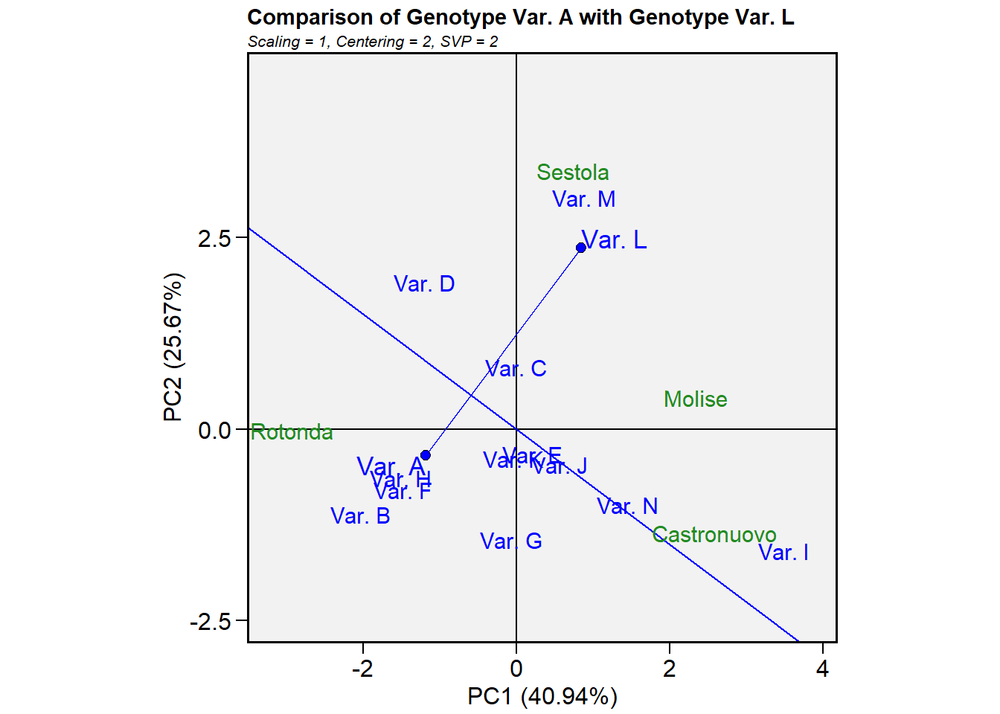
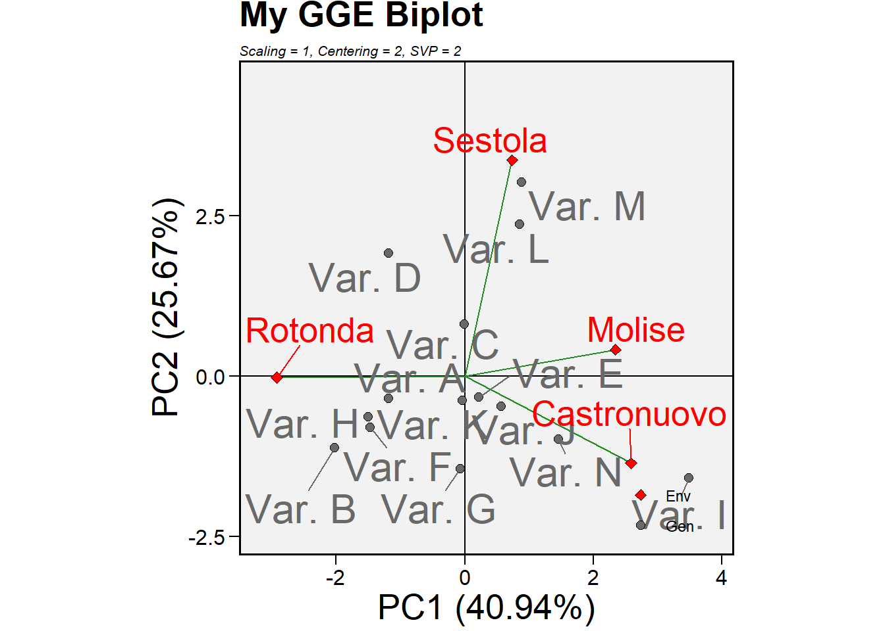

Chapter 8 GGE BiPlots

Introduce description for GGE BiPlots
8.1 metan
To our knowledge, the most complete package for the elaboration of GGE BiPlots is the “metan” package, developed by Olivotto et al (2018). Here, we will overview some of it’s main functions, but the more complete description can de found at their site.
As usual, we must install (if it is not yet installed) and call the library:
install.packages("metan")
library(metan)library(metan)Then, we will use our tomato data, which we usually call ‘mydata’
mydata <- read.csv("tomatoMLT2020.csv")Now, before actually doing the plot, we prepare the GGE model with our required parameters.
gge_model <- gge(mydata, # My data set
env = location, # Column indicating the environment or location
gen = variety, # Column indicating the genotype
resp= yield, # Response column. For our case, we choose yield/
scaling = 1) # Divides all values observationsAfter that, all we need is to plot.
plot(gge_model)
Here, we present the simplest version of the plot. But, the package includes other variants of the GGE BiPlots which might provide aditional information and/or interpretation.
8.1.1 Which won where
The “Which-Won-Where” type draws a polygon along the genotypes that are the farthest away from the origin, this means that they are the genotypes with longest vectors and are thus the most responsive. As a rule of thumb, genotypes which are on the polygon vertex had the best performances in the environments found in the same sector (Yan et al., 2007).
plot(gge_model, type= 3)
8.1.2 Mean vs. Stability
The “Mean vs. Stability” feature draws a first line, the mean environmental axis, passing through the origin with an arrow representing the “ideal” environment, and then a second line perpendicular to the first, which represents the GxE interaction. Genotypes with projections close to the arrow in the first axis would be high performers in this ideal environment, while large projections on the second axis indicate low stability or high GxE interaction.
plot(gge_model, type = 2)
8.1.3 Genotype Ranking
The “ideal” genotype is represented as a small circle within a large set of concentric circles. How close the other gentoypes are to this circle determines how close are they to this “ideal” genotype.
plot(gge_model, type = 8)## Warning: Removed 979 row(s) containing missing values (geom_path).
8.1.4 Genotype Comparison
A line is drawn dividing the two genotypes
plot(gge_model,
type = 9,
sel_gen1 = "Var. A",
sel_gen2 = "Var. L")
8.1.5 Modifying the plot.
The GGE BiPlot is a ggplot object, so it can be easily modified. Some useful information for that matter can be found [here] (http://r-statistics.co/Complete-Ggplot2-Tutorial-Part2-Customizing-Theme-With-R-Code.html).
library(ggplot2)
plot(gge_model,
col.gen = "dimgray",
col.env = "red", # Changing the color of the labels for genotype and environment
size.text.env= 7, # Changing the size of the labels for genotype and environment
size.text.gen = 8)+ # The metan function arrives up to here, from now on, we add pieces
labs(title = "My GGE Biplot")+ #
theme(title = element_text(size= 20), # We can change the title or axis font size
axis.title = element_text(size= 20)) 